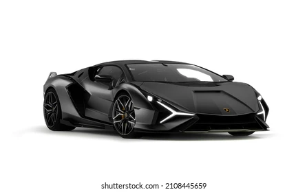
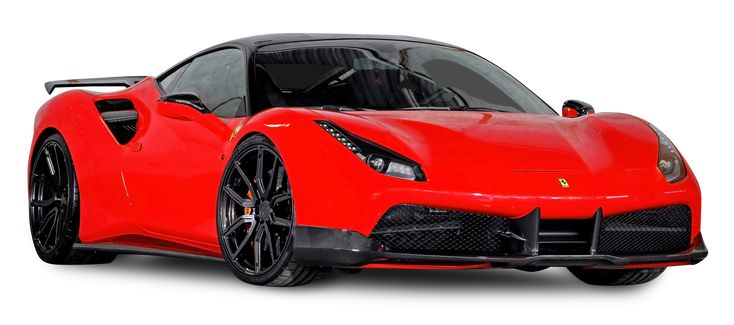
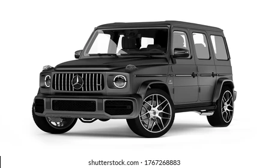

<!-- 2) კომენტარების სახით ახსენით რა არის list-ები, როგორი სახის არსებობს სიები გვაქვს და რა დანიშNულება გააჩნიათ. -->


<!-- List (სია) არის ელემენტების ჩამონათვალი.HTML-ში <ol>/<ul> გამოიყენება ელემენტების გამოსაჩენად -->

<!-- სახეები: -->

<!-- <ol> → დალაგებული სია (ნომრებით) -->
<!-- <ul> → დაუხარისხებელი სია (წერტილებით) -->
<!-- <li> → სიის ელემენტი -->
<!-- Nested list → როცა ერთ სიაში მეორე სიაა ჩასმული -->

 <!-- დანიშნულება:
 ელემენტების ერთად შენახვა, ორგანიზება და მარტივი მართვა -->


<!-- 3) შექმენით დალაგებული სია, სადაც შეიტანთ თქვენთვის სასურველ 5 მნიშვნელობას.
 -->
<ol>
    <li>საქართველო</li>
    <li>lamborgini</li>
    <li>saturn</li>
    <li>bugati</li>
    <li>BMW</li>
</ol>


<!-- 4) შექმენით დაულაგებელისია, სადაც შეიტანთ თქვენთვის სასურველ 5 მნიშვნელობას. -->
 <ul>
    <li>მაიმუნი</li>
    <li>gorilla</li>
    <li>ლომი</li>
    <li>დოლლარი</li>
    <li>ევრო</li>
 </ul>


<head>
  <title>adidas.ge</title>
</head>


<body>
    <head>
        <title>website</title>
    </head>

<ul>
    <li>ferrari</li>
    <ol>
        <li>bugati</li>
        <li>lamborgini</li>
        <li>BMW</li>
        <li>mercedes</li>
    </ol>
</ul>

<h2>lamborgini</h2>



<h2>bugati</h2>


<h2>BMW</h2>


<h2>ferrari</h2>



<h2>mercedes</h2>



</body>


